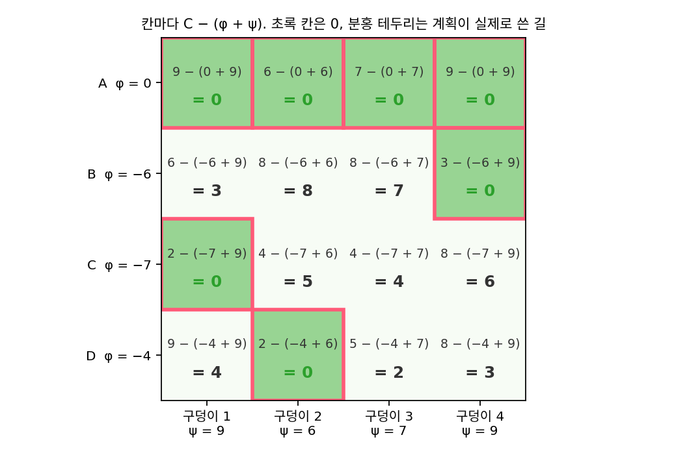
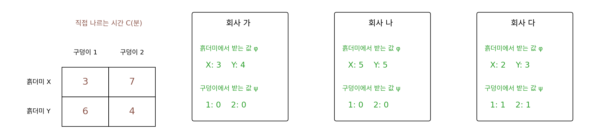
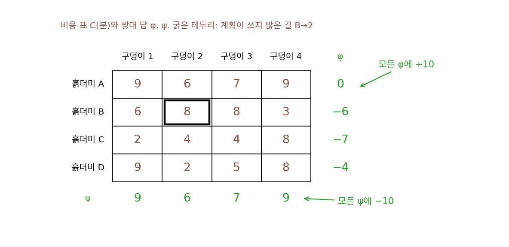
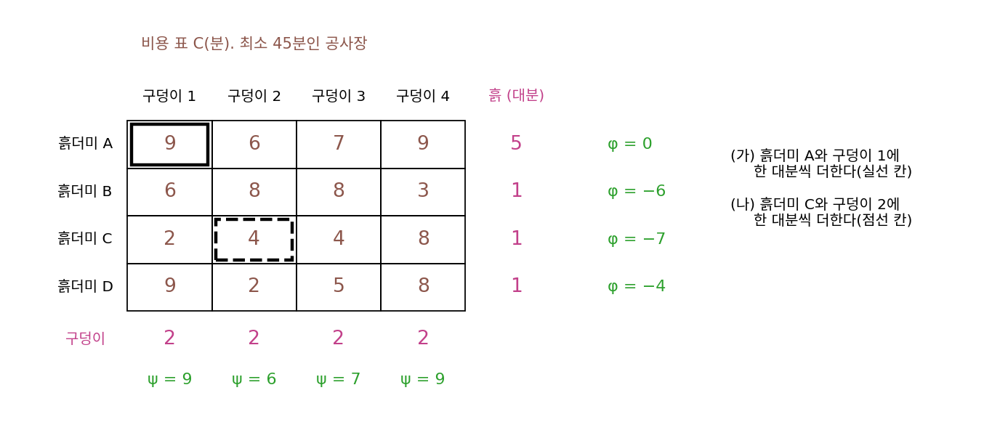

칸토로비치 쌍대: 흙더미와 구덩이에 매기는 값
칸토로비치 문제를 풀면 어느 길로 몇 대를 보낼지가 나오지만, 현장 감독에게는 다른 물음도 생긴다. 흙더미 A에 흙이 한 대분 더 쌓이면 일이 얼마나 늘까? 구덩이 2가 한 대분 더 깊어지면? 계획표에는 이런 물음에 답하는 숫자가 없다. 또 운송 회사가 「흙더미에서 실을 때 얼마, 구덩이에 부을 때 얼마」로 값을 매겨 일을 모두 맡겠다고 하면, 그 견적이 손해인지 아닌지 어떻게 따질까?
역사: 칸토로비치의 「해결 승수」
칸토로비치는 1939년 소책자에서 이미 계획과 함께 자원마다 붙는 수, 그가 「해결 승수」라 부른 값을 구해 계획이 최적인지 가렸다. 귀한 자원일수록 승수가 커지고, 승수를 보고 남는 자원 쪽으로 생산을 옮기면 이득인지 판단한다. 그는 뒤에 이 해결 승수를 「객관적으로 정해지는 평가」라 고쳐 불렀다. 수학적으로는 시장의 가격과 같은 구실을 했지만, 계획 경제의 소련에서 「가격」이라는 말을 피하려고 고른 이름이었다고도 전해진다. KKT 조건을 다루며 본 쌍대성(최소화 문제에서 만든 최대화 문제의 답이 원래 답과 같다는 성질)이 수송 문제에서는 이 값들의 모습으로 나타난다.
운송 회사의 견적
운송 회사가 공사장 일을 모두 맡겠다며 이렇게 제안한다고 하자. 흙더미 i에서 한 대분을 실을 때마다 φᵢ분어치를 받고, 구덩이 j에 한 대분을 부을 때마다 ψⱼ분어치를 받는다. 값이 음수이면 그만큼 깎아 준다는 뜻인데, 현장 감독은 이 견적을 받아들일까? 어느 한 길이라도 φᵢ + ψⱼ가 직접 나를 때의 시간 Cᵢⱼ보다 크면, 감독은 그 길만큼은 직접 나르는 편이 낫다. 그래서 회사가 모든 일을 맡으려면 모든 길에서 φᵢ + ψⱼ ≤ Cᵢⱼ여야 한다. 이 공정 조건을 지키면서 회사는 수입 Σpᵢφᵢ + Σqⱼψⱼ를 가장 크게 하고 싶다.
공사장 문제(흙더미 5, 1, 1, 1대분, 구덩이 2대분씩)에서 이 최대화를 풀면 한 가지 답으로 흙더미 값 φ = (0, −6, −7, −4), 구덩이 값 ψ = (9, 6, 7, 9)가 나온다. 흙더미 B, C, D에서 실을 때는 6, 7, 4분어치를 깎아 주고, 구덩이에 부을 때 9, 6, 7, 9분어치를 받는다. 수입은 5 × 0 + 1 × (−6) + 1 × (−7) + 1 × (−4) + 2 × (9 + 6 + 7 + 9) = −17 + 62 = 45분어치다. 감독이 가장 잘 짠 계획으로 직접 나를 때 걸리는 45분과 정확히 같다.

그림의 칸을 보면 두 가지가 눈에 띈다. 모든 칸에서 Cᵢⱼ − (φᵢ + ψⱼ) ≥ 0이라 견적이 공정하고, 계획이 실제로 트럭을 보낸 일곱 길에서는 여유 Cᵢⱼ − (φᵢ + ψⱼ)가 모두 0이다. 쓰는 길에서는 회사가 받는 값이 직접 나르는 시간과 같고, 쓰지 않는 길에서만 여유가 남는다. 이렇게 운반 계획 대신 장소마다의 값 φᵢ, ψⱼ를 정하는 최대화 문제를 칸토로비치 문제의 쌍대 문제 (값 매기기로 본 수송 문제 / dual problem)라 하고, 두 문제의 답은 언제나 같다.
어느 공정한 견적이든 수입은 직접 나르는 어떤 계획의 비용보다 클 수 없다. 계획 π의 비용 ΣπᵢⱼCᵢⱼ에서 Cᵢⱼ를 그보다 작거나 같은 φᵢ + ψⱼ로 바꾸면 Σπᵢⱼ(φᵢ + ψⱼ)가 되는데, 행의 합과 열의 합을 쓰면 이것이 곧 수입 Σpᵢφᵢ + Σqⱼψⱼ다. 그래서 수입의 최댓값 ≤ 비용의 최솟값이고, 선형계획에서는 등호가 성립한다는 것이 쌍대 정리다. 공사장에서 두 값이 모두 45가 나온 것이 그 등호다.
ML에서: 바서슈타인 손실의 그래디언트
바서슈타인 거리(두 분포 사이를 옮기는 최소 비용)를 손실로 쓰는 학습에서는, 모델이 내놓은 분포의 확률을 조금 바꿀 때 손실이 얼마나 바뀌는지, 곧 역전파에 넘길 그래디언트가 필요하다. 2015년 찰리 프로그너(Charlie Frogner)와 동료들의 「바서슈타인 손실로 학습하기」는 이 그래디언트를 수송 문제를 풀 때 함께 나오는 쌍대의 값에서 얻었다. 쌍대의 값이 왜 그래디언트가 되는지는 아래 문제 9에서 따져 본다. 쌍대의 값 φ를 장소마다 하나씩 적는 대신 신경망 하나로 두고 학습하는 방법도 있는데, 생성적 적대 신경망의 판별기가 그 신경망이 되는 이야기는 WGAN을 다룰 때 따로 따진다.
문제 7. 운송 회사 세 곳의 견적
흙더미 둘(X, Y)과 구덩이 둘(1, 2)이 모두 트럭 1대분이고, 직접 나르는 시간은 X→1 3분, X→2 7분, Y→1 6분, Y→2 4분이다. 세 회사가 견적을 냈다(흙더미에서 받는 값 φ, 구덩이에서 받는 값 ψ). 가: φ = (3, 4), ψ = (0, 0). 나: φ = (5, 5), ψ = (0, 0). 다: φ = (2, 3), ψ = (1, 1). (가) 각 회사의 수입은? (나) 감독이 받아들일 견적은 어느 것인가? (다) 감독이 직접 나를 때의 최소 시간과 비교하라.


수입은 가 7, 나 10, 다 7이에요. 회사 입장에선 나가 제일 좋고, 감독 입장에선 7이 싸니까 가나 다죠.

감독이 회사 나의 견적을 받으면 X에서 구덩이 1로 가는 한 대분에 얼마를 내죠?

φX + ψ₁ = 5 + 0 = 5분어치요. 직접 나르면 3분인데요. Y→2도 5분어치인데 직접 하면 4분이고요. 감독은 그 길들을 직접 나르겠네요. 견적 나는 손해라서 아예 안 받아들여요. 수입이 크다고 다 되는 게 아니었어요.

가와 다는 네 칸 모두 φ + ψ ≤ C인지 확인했어. 가는 X→1이 3 ≤ 3, X→2가 3 ≤ 7, Y→1이 4 ≤ 6, Y→2가 4 ≤ 4. 다도 3, 3, 4, 4로 똑같아. 둘 다 공정하고 수입이 7이야.

감독이 직접 나를 때 최소는요? 그리고 공정한 견적 가운데 수입이 7보다 큰 것을 찾을 수 있을까요?
직접 나르면 X→1, Y→2로 3 + 4 = 7분, X→2, Y→1은 13분이라 최소 7분이에요. 어, 가와 다의 수입도 7인데요.
공정한 견적의 수입이 직접 나르는 비용보다 클 수 있을까요?

공정하면 칸마다 φ + ψ ≤ C니까, 계획이 쓰는 칸을 따라 더하면 수입이 비용을 못 넘어요. 그러니까 7이 끝이에요.
가랑 다는 다른 견적인데 둘 다 7이네?
가에서 흙더미 값을 1 내리고 구덩이 값을 1 올리면 다가 돼. 서로 민 것뿐이야.
학교 앞 복사집이 「장당 50원」이라고 붙였는데 바로 옆 무인 복사기가 40원이면 아무도 안 맡기잖아요. 공사장에서도 한 길이라도 직접 나르는 게 싸면 회사의 견적은 그 길에서 받아들여지지 않아요.
문제 8. 값을 한꺼번에 밀면
공사장 문제의 쌍대 답 φ = (0, −6, −7, −4), ψ = (9, 6, 7, 9)에서 (가) 모든 φᵢ에 10을 더하고 모든 ψⱼ에서 10을 빼면, 견적은 여전히 공정한가? 수입은 어떻게 되는가? (나) 쌍대 답은 하나로 정해지는가? (다) 계획이 쓰지 않은 길 B→2의 C − (φ + ψ)는 8이다. 이 길로 트럭을 한 대라도 보내는 계획이 최적일 수 있는가?

(가)는 φᵢ + ψⱼ가 칸마다 그대로니까 공정해요. 수입은 Σpᵢ × 10만큼 늘고 Σqⱼ × 10만큼 줄어요. 흙더미 합이 8, 구덩이 합이 8이니까 그대로 45예요.
구덩이 쪽 합이 9였다면요?
80 늘고 90 주니까 수입이 10 줄어요. 아, 그런데 양쪽 합이 다르면 애초에 흙을 남김없이 옮기는 계획이 없네요. 합이 같아야 문제가 성립하고, 그러면 언제나 수입이 바뀌지 않아요.
(나)는 그래서 하나로 안 정해져. 모든 값을 같은 상수만큼 밀 수 있으니까. φA를 5로 고정하고 다시 풀었더니 φ = (5, −1, −2, 1), ψ = (4, 1, 2, 4)가 나왔어. 앞의 답을 5만큼 민 거야. φA = 0으로 고정하면 이 문제는 답이 하나뿐이고.
좋아요. (다)는요? 쓰지 않은 길에 여유 8이 남았다는 게 무슨 뜻일까요?
비용에서 수입을 빼 보면… 어떤 계획이든 비용 = 수입 + Σπᵢⱼ(Cᵢⱼ − φᵢ − ψⱼ)로 쓸 수 있어요. 문제 7에서 수입이 비용을 못 넘은 걸 등식으로 쓴 거예요.
최적 계획이면 비용은 얼마여야 하죠?

수입 45와 같아야 해요. 그러면 여유가 양수인 칸의 π는 모두 0이어야 해요.
B→2로 한 대라도 보내면?
비용이 적어도 8분 늘어. 그러니까 여유가 남는 길은 최적 계획이 절대 쓰지 않아.

쌍대 답만 있으면 「이 길은 안 써도 된다」를 계획을 다시 풀지 않고 알 수 있겠네요. 기말고사 범위에서 배점이 0인 단원은 아무리 공부해도 점수가 안 오르는 것처럼요.
문제 9. 흙이 늘었는데 시간이 줄었다
공사장 문제(흙더미 5, 1, 1, 1대분, 구덩이 2대분씩, 최소 45분)에서 흙더미 하나와 구덩이 하나에 같은 양을 더한다. 쌍대 답은 φ = (0, −6, −7, −4), ψ = (9, 6, 7, 9)다. (가) 흙더미 A와 구덩이 1에 한 대분씩 더하면 최소 시간은 얼마나 늘 것 같은가? (나) 흙더미 C와 구덩이 2에 한 대분씩 더하면? (다) 손실을 바서슈타인 거리로 둔 학습에서, 쌍대의 값이 그래디언트 구실을 한다는 말을 (가)·(나)의 답으로 설명하라.

흙이 한 대분 늘면 나를 게 늘어나니까 시간은 당연히 늘죠. C에서 구덩이 2까지가 4분이니까 (나)는 4분쯤 늘 것 같아요.
쌍대의 값으로 예측하면 얼마죠?

φC + ψ₂ = −7 + 6 = −1이에요. 시간이 1분 준다고요? 흙이 늘었는데요? 선형계획을 다시 풀어 볼게요. 44분이요. 정말 1분 줄었어요.
새 계획을 보면 알겠어. 원래는 A의 한 대분이 구덩이 1로 9분 걸려 갔잖아. 새 계획에서는 C가 구덩이 1로 두 대(2분씩)를 보내고, A는 그 한 대분을 구덩이 1 대신 구덩이 2로 6분에 보내. A→1의 9분이 C→1의 2분과 A→2의 6분, 합 8분으로 바뀐 거야. C에 생긴 흙이 A의 먼 길을 대신해 줬어.
(가)는 어떻게 될까요?
φA + ψ₁ = 0 + 9 = 9분이에요.
다시 풀어 볼게. 54분, 정확히 9분 늘었어. 0.5대분씩 더하면 4.5분 늘고.
그럼 쌍대의 값은 무엇을 재고 있었던 걸까요?
「그 흙더미와 그 구덩이에 한 단위를 더했을 때 최소 비용이 바뀌는 양」이요. 최소 비용을 양으로 미분한 값이네요. 함수를 직접 다시 계산하지 않고 도함수로 변화를 근사하던 것과 같아요.
그러면 (다)는, 모델이 내놓은 분포의 칸마다 확률을 조금 바꿨을 때 바서슈타인 손실이 얼마나 바뀌는지가 φ라는 거네요. 수송 문제를 한 번 풀면 쌍대의 값이 같이 나오니까, 그게 곧 역전파에 넘길 그래디언트예요. 과제 점수표에서 어느 항목을 1점 올리면 총점이 얼마나 오르는지를 미리 알면, 어디에 시간을 쓸지 바로 정할 수 있는 거랑 같아요.